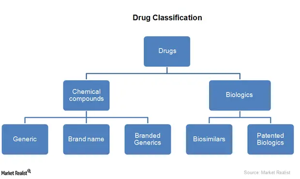

Expanded Nursing Uganda Explanation
Classification of mental illnesses should be studied as a way of organizing medicines by therapeutic use, mechanism, chemical group, body-system effect and safety profile. For nursing practice, classification helps predict indications, adverse effects, contraindications and the observations required after administration.
01 Overview
Mental health is a state of balance between the individual and the surrounding world.
Mental health is a state of harmony between oneself and others.
Mental health is a co-existence between the realities of the self and that of other people and that of the environment.
HEALTH is a state of well being of an individual, socially, physically, mentally, not merely the absence of a disease or infirmity. (WHO)
PSYCHIATRY is a branch of medicine which deals with assessment, diagnosis and treatment of mental disorders.
- A State of Well-being: This means that mental health is about feeling good, having a sense of purpose, and experiencing overall life satisfaction. It's not static but dynamic, fluctuating as we navigate life's challenges.
- Realizes His or Her Own Abilities: A mentally healthy person has a realistic understanding of their strengths and weaknesses. They can recognize their potential and strive to achieve it, fostering self-esteem and self-efficacy.
- Cope with the Normal Stresses of Life: Life inevitably brings challenges, disappointments, and pressures. Mental health equips us with resilience – the ability to adapt, recover, and grow stronger in the face of adversity. This doesn't mean being stress-free, but rather having effective strategies to manage stress.
- Can Work Productively and Fruitfully: This refers to the ability to engage in meaningful activities, whether it's employment, education, caregiving, or creative pursuits. It encompasses concentration, motivation, problem-solving, and a sense of accomplishment.
- Is Able to Make a Contribution to His or Her Community: Mental health enables individuals to form meaningful relationships, participate in social life, and contribute positively to their families, friendships, and broader society. It's about a sense of belonging and connectedness.
- Mental Health: As discussed, this is a state of optimal psychological and emotional well-being. Someone can have good mental health even if they experience occasional stress, sadness, or anxiety, as long as they can cope effectively and maintain overall functioning.
- Mental Illness (or Mental Disorder): This refers to a wide range of conditions that affect mood, thinking, and behavior. Mental illnesses are characterized by significant distress, impairment in daily functioning, and often require diagnosis and treatment. They are not merely temporary reactions to stress or personal weaknesses.
- Feature Mental Health Mental Illness
- State State of well-being, thriving Diagnosable condition affecting thinking, mood, or behavior
- Coping Effective coping with life's stresses Difficulty coping, significant distress
- Functioning Productive, fruitful, contributes to community Significant impairment in social, occupational, or other important areas of functioning
- Presence of Symptoms May experience normal fluctuations in mood/stress Presence of persistent, often distressing symptoms (e.g., hallucinations, severe depression, extreme anxiety)
- Duration Dynamic, but generally stable functioning Prolonged or recurrent, often requires professional intervention
Building on the WHO definition, a mentally healthy individual typically exhibits several key characteristics:
- Positive Self-Concept: Possesses a realistic and generally positive view of themselves, including their strengths and limitations.
- Sense of Identity: Has a clear understanding of who they are, their values, and their purpose.
- Autonomy and Independence: Capable of making their own decisions and taking responsibility for their actions, while also recognizing the importance of interdependence.
- Resilience: Ability to bounce back from adversity, adapt to change, and learn from difficult experiences.
- Emotional Regulation: Can recognize, understand, and appropriately express emotions (both positive and negative) without being overwhelmed by them.
- Effective Coping Strategies: Has a repertoire of healthy ways to manage stress, problem-solve, and deal with challenges.
- Meaningful Relationships: Capable of forming and maintaining healthy, reciprocal relationships based on trust, empathy, and respect.
- Purpose and Direction: Finds meaning in life, sets goals, and works towards achieving them, contributing to a sense of fulfillment.
- Adaptability: Can adjust to new situations, unexpected events, and changing circumstances.
- Realistic Perception of Reality: Able to differentiate between reality and fantasy, and make sound judgments.
Stress is a natural and often unavoidable part of life. It's essentially your body's way of responding to any kind of demand or threat. When you perceive a threat – whether it's physical (like a near-miss car accident) or psychological (like a looming deadline or a difficult conversation) – your body initiates a "fight-or-flight" response.
- Stress: Is a stimulus or demand that generates disruption in homeostasis or produces a reaction.
- Stress: Is a state of disequilibrium that occurs when there is a disharmony between demands occurring within an individual’s internal and external environment and his or her ability to cope with those demands.
- Stressor: a demand from within an individual’s internal and external environment that elicits a physiological and or psychological response.
- Stressor: is a source of stress.
Stress can produce adaptive and maladaptive responses.
- Release of hormones: Adrenaline and cortisol flood your system.
- Increased heart rate and blood pressure.
- Rapid breathing.
- Muscle tension.
- Sharpened senses.
Historically, this response was necessary for survival, enabling our ancestors to react quickly to danger. In modern life, however, many of our stressors are not physical threats but ongoing psychological pressures.
- Eustress (Good Stress): This is positive, short-term stress that can motivate us, enhance performance, and help us achieve goals. Examples include the excitement of a new job, the challenge of learning a new skill, or the anticipation of a big event. Eustress is invigorating and can lead to personal growth.
- Distress (Bad Stress): This is negative stress that can be overwhelming, prolonged, and detrimental to health. It occurs when demands exceed our perceived ability to cope. Examples include chronic work pressure, relationship problems, financial difficulties, or major life changes (e.g., loss of a loved one). Distress can lead to burnout, anxiety, depression, and various physical health problems.
While short-term stress can be adaptive, chronic or overwhelming distress can significantly impair mental well-being. It can lead to:
- Emotional Symptoms: Irritability, mood swings, anxiety, depression, feelings of being overwhelmed, difficulty relaxing, low self-esteem.
- Cognitive Symptoms: Difficulty concentrating, memory problems, negative thinking, impaired judgment, excessive worry.
- Behavioral Symptoms: Social withdrawal, changes in eating habits (overeating or undereating), sleep disturbances (insomnia or hypersomnia), increased use of substances (alcohol, drugs), procrastination, fidgeting.
- Physical Symptoms (linked to mental impact): Headaches, muscle tension, digestive problems, fatigue, weakened immune system.
Individuals react to stress in a myriad of ways, influenced by their unique genetic makeup, past experiences, coping mechanisms, and the nature of the stressor. Responses can be categorized broadly:
- Physiological Responses: Fight-or-Flight: The immediate, automatic response involving the sympathetic nervous system (increased heart rate, blood pressure, muscle tension, rapid breathing).
- General Adaptation Syndrome (GAS) - Hans Selye: A three-stage model describing the body's long-term response to stress: Alarm Reaction: Initial shock, fight-or-flight response.
- Stage of Resistance: The body tries to cope with the stressor, maintaining elevated physiological responses but attempting to return to normal. Resources are gradually depleted.
- Stage of Exhaustion: If stress is prolonged, the body's resources are depleted, leading to weakened immunity, fatigue, and increased vulnerability to illness and disease (both physical and mental).
- Emotional Responses: Anxiety: Feelings of unease, worry, nervousness, apprehension.
- Anger/Irritability: Frustration, resentment, short temper.
- Sadness/Depression: Feelings of hopelessness, helplessness, loss of interest.
- Fear: Response to perceived danger or threat.
- Overwhelm: Feeling swamped, unable to cope.
- Cognitive Responses: Negative self-talk: "I can't do this," "I'm not good enough."
- Rumination: Repetitive thinking about a stressor.
- Catastrophizing: Blowing problems out of proportion.
- Difficulty concentrating or making decisions.
- Memory impairment.
- Behavioral Responses: Adaptive/Healthy: Exercise, seeking social support, engaging in hobbies, problem-solving, relaxation techniques (meditation, deep breathing), healthy diet, adequate sleep.
- Maladaptive/Unhealthy: Social withdrawal, aggression, substance abuse, excessive eating or undereating, procrastination, avoidance, excessive sleeping, lashing out at others.
Why do some people thrive under pressure while others crumble? The way an individual responds to stress is determined by a complex interplay of factors:
- Perception of the Stressor (Appraisal): Primary Appraisal: Is this event a threat, a challenge, or irrelevant?
- Secondary Appraisal: Do I have the resources to cope with this threat/challenge?
- If a situation is appraised as highly threatening and resources are perceived as insufficient, the stress response will be more intense and negative.
- Coping Mechanisms: Problem-focused coping: Directly addressing the source of stress (e.g., studying for an exam, creating a budget).
- Emotion-focused coping: Managing the emotional reaction to stress (e.g., meditation, talking to a friend, exercise).
- The effectiveness and healthiness of coping strategies significantly influence outcomes.
- Individual Differences: Genetics: Some individuals may be genetically predisposed to higher stress reactivity.
- Personality: Resilience: The ability to adapt and recover from adversity.
- Hardiness: Commitment, control, and challenge (seeing stressors as opportunities).
- Optimism vs. Pessimism.
- Self-efficacy: Belief in one's ability to succeed.
- Temperament: Innate behavioral and emotional patterns.
- Social Support: A strong network of family, friends, and community provides emotional, informational, and practical support, acting as a buffer against stress.
- Lack of social support can exacerbate the negative effects of stress.
- Past Experiences and Learning: Previous encounters with similar stressors, and how they were handled, shape current responses.
- Traumatic experiences can lead to heightened stress responses.
- Physical Health Status: Underlying chronic illnesses, poor nutrition, lack of sleep, or substance abuse can deplete energy reserves and reduce the body's ability to cope with stress.
- Environmental Factors: Socioeconomic status, living conditions, access to resources, cultural background, and exposure to chronic environmental stressors (e.g., noise, pollution, violence) can all impact stress levels and coping abilities.
Mental illness is the maladjustment in living. The inability to cope with stress and environment.
It produces a disharmony in the person’s ability to meet human needs comfortably or effectively and function with culture
Mentally ill person loses his ability to respond according to the expectations he has for himself and the demands that society has for him
In general an individual may be considered to be mentally ill if
- The personal behavior is causing distress to self and others
- The person’s behavior is causing disturbance in his day-to-day activities, job and interpersonal relationships
- Significant Distress: The individual experiences profound emotional pain, discomfort, or suffering that is disproportionate to circumstances or is persistent over time. This distress can manifest as sadness, anxiety, anger, confusion, or other intense negative emotions.
- Impairment in Functioning: The condition significantly interferes with one or more major life activities. This could include: Social Functioning: Difficulty maintaining relationships, social withdrawal, inability to interact appropriately.
- Occupational/Academic Functioning: Inability to work, perform daily tasks, attend school, or maintain employment.
- Self-Care: Neglect of personal hygiene, eating, or other basic needs.
- Role Performance: Inability to fulfill roles as a parent, spouse, student, or employee.
- Deviation from Norms: The thoughts, feelings, or behaviors are significantly outside of what is culturally expected or considered typical. This deviation must be considered within a cultural context, as what is "normal" can vary.
- Duration and Persistence: Unlike transient mood changes or reactions to stress, the symptoms of mental illness are usually persistent over a certain period, not just a brief episode.
It's important to remember that experiencing one or two of these symptoms does not necessarily mean a person has a mental illness.
- Changes in Mood: Persistent sadness or irritability: Lasting for weeks or months, not just a day or two.
- Loss of interest or pleasure: In activities once enjoyed (anhedonia).
- Extreme mood swings: Rapid shifts from extreme happiness to extreme sadness or anger.
- Feelings of hopelessness or helplessness.
- Elevated mood, euphoria, or grandiosity: Unusually high energy, racing thoughts, reduced need for sleep (can indicate mania).
- Changes in Thinking and Perception: Difficulty concentrating or focusing: Problems paying attention or easily distracted.
- Memory problems: Significant, unexplainable forgetfulness.
- Confused thinking: Disorganized thoughts, difficulty following conversations.
- Paranoia: Unreasonable suspicion or distrust of others.
- Delusions: False beliefs not based in reality (e.g., belief that one is being persecuted or has special powers).
- Hallucinations: Hearing, seeing, smelling, tasting, or feeling things that are not there (e.g., hearing voices).
- Obsessive thoughts: Repetitive, intrusive, unwanted thoughts.
- Changes in Behavior: Social withdrawal: Avoiding friends, family, or social activities.
- Changes in sleep patterns: Insomnia (difficulty sleeping), hypersomnia (sleeping too much), or disturbed sleep.
- Changes in appetite or weight: Significant weight loss or gain.
- Decreased energy or fatigue: Feeling constantly tired and lacking motivation.
- Increased agitation or restlessness: Inability to sit still, pacing.
- Neglect of personal hygiene: Not showering, grooming, or changing clothes.
- Impulsive or risky behavior: Excessive spending, reckless driving, substance abuse.
- Aggression or violence.
- Suicidal thoughts or self-harm behaviors.
- Physical Symptoms (without a clear medical cause): Unexplained aches and pains: Headaches, stomach aches, muscle tension.
- Digestive problems: Nausea, diarrhea, constipation.
- Fatigue.
- Profound Impairments in Daily Functioning: Self-care limitations: Individuals may struggle with basic hygiene, nutrition, and personal upkeep.
- Impaired functioning: This can manifest as difficulty maintaining employment, managing finances, or fulfilling household responsibilities.
- Significant deficits in biological, emotional, and cognitive functioning: These can include disruptions in sleep patterns, appetite, mood regulation, memory, attention, and problem-solving abilities.
- Disability and Life-Process Changes: Mental disorders can lead to long-term disability, preventing individuals from engaging in typical life activities.
- They can alter major life trajectories, impacting educational attainment, career progression, and the formation of meaningful relationships.
- Intense Emotional Distress and Dysregulation: Pervasive emotional problems: These include chronic anxiety, overwhelming sadness, debilitating anger, profound loneliness, and prolonged grief that can be disproportionate to life events.
- Emotional lability: Rapid and intense shifts in mood can make daily life unpredictable and challenging.
- Co-occurring Physical Health Issues: Somatization: Mental distress can manifest as physical symptoms, such as chronic pain, fatigue, headaches, and digestive problems, often without clear medical explanation.
- Increased risk of physical illnesses: Individuals with mental disorders are at a higher risk for cardiovascular disease, diabetes, and other chronic conditions, partly due to lifestyle factors, medication side effects, and physiological stress responses.
- Distortions in Perception, Thought, and Communication: Alterations in thinking: This can include delusional beliefs, disorganized thought processes, and difficulty with abstract reasoning.
- Distorted perception: Hallucinations (auditory, visual, etc.) can significantly impact an individual's reality.
- Communication difficulties: Disorganized speech, reduced verbal output, or an inability to express thoughts coherently can hinder social interaction.
- Impaired decision-making: Cognitive deficits can make it challenging to make sound judgments and plan for the future.
- Challenges in Interpersonal Relationships: Difficulties relating to others: Mental illness can strain existing relationships and make it hard to form new ones due to social withdrawal, paranoia, irritability, or communication barriers.
- Social isolation and stigma: The misunderstanding and prejudice surrounding mental illness can lead to ostracization and loneliness.
- Risk to Self and Others: Dangerous behaviors: In some cases, mental disorders can lead to self-harm, suicidal ideation, or, rarely, aggression towards others, particularly when psychosis or severe mood disturbances are present.
- Widespread Adverse Effects: Individual well-being: Mental illness significantly diminishes an individual's quality of life, sense of purpose, and overall happiness.
- Family burden: Families often experience immense emotional, financial, and logistical strain as they try to support a loved one with a mental disorder.
- Community impact: Untreated mental illness can contribute to homelessness, crime, and a reduced workforce productivity, impacting societal well-being and economic stability.
- Significant Life Domain Problems: Financial problems: Loss of employment, healthcare costs, and inability to manage finances can lead to severe financial hardship.
- Marital and family discord: Mental illness can be a major source of conflict, divorce, and family breakdown.
- Academic and occupational setbacks: Difficulty concentrating, maintaining attendance, and performing tasks can lead to school dropout and job loss.
Many factors are responsible for the causation of mental illness. These factors may predispose an individual to mental illness, precipitate or perpetuate the mental illness
- Predisposing Factors: These are long-term, underlying vulnerabilities that increase an individual's susceptibility to developing a mental illness. They set the stage, often present for extended periods or even from birth. Examples: Genetic make-up: Inherited predispositions, not the illness itself, but a heightened vulnerability. Studies highlight the significant role of heredity in mental health conditions (e.g., three-fourths of mental defectives and one-third of psychotic individuals owing their condition mainly to unfavorable heredity).
- Physical damage to the central nervous system: Chronic or congenital neurological impairments.
- Adverse psychological influences: Early childhood trauma, developmental issues, or chronic maladaptive learned behaviors.
- Precipitating Factors: These are acute, immediate stressors or events that trigger the onset of a mental illness in a vulnerable individual. They often occur shortly before the symptoms emerge. Examples: Physical stress: Acute illness, injury, or other physical demands on the body.
- Psychosocial stress: Significant life events such as bereavement, job loss, relationship breakdown, academic failure, or trauma.
- Perpetuating Factors: These are factors that maintain, aggravate, or prolong a mental illness once it has developed. They make it harder for the individual to recover or can lead to symptom exacerbation. Examples: Psychological stress: Ongoing, unresolved stress can prevent recovery and worsen existing symptoms.
- Other examples could include lack of social support, financial difficulties, substance abuse, stigma, or inadequate treatment.
These involve genetic, neurochemical, structural, and physiological aspects of the body, particularly the brain.
- Heredity (Genetic Make-up): Mental illnesses are not typically inherited directly, but a predisposition or vulnerability can be passed down through genes. This means an individual might inherit a higher risk, but whether the illness develops often depends on the interaction with environmental and psychological factors.
- As you noted, studies indicate a significant genetic component in conditions like intellectual disability ("mental defectives") and psychoses.
- Biochemical Factors (Neurotransmitters): Disturbances in the balance or functioning of neurotransmitters (chemical messengers in the brain) are strongly implicated in various psychiatric disorders.
- Examples include: Dopamine: Linked to schizophrenia (excess) and Parkinson's disease (deficiency), also involved in reward pathways.
- Serotonin: Associated with depression and anxiety (deficiency).
- Norepinephrine (Noradrenaline): Involved in mood, arousal, and attention (imbalances linked to depression and anxiety).
- GABA: The primary inhibitory neurotransmitter (deficiency linked to anxiety disorders).
- Brain Damage / Structural and Functional Alterations: Any insult or damage to the brain can affect its structure and function, leading to mental health symptoms.
- Causes include: Infection: Neurosyphilis, encephalitis, HIV infection (can lead to neurocognitive disorders).
- Injury: Traumatic Brain Injury (TBI) from head injury, leading to cognitive, emotional, and behavioral changes.
- Intoxication: Damage from toxins like alcohol, barbiturates, lead, recreational drugs, or even certain medications.
- Vascular Issues: Poor blood supply (ischemia), bleeding (intracranial hemorrhage), or stroke, which can impair brain function.
- Alteration in Brain Function: Changes in blood chemistry (e.g., severe hypoglycemia, hypoxia/anoxia, electrolyte imbalances) that directly interfere with neuronal activity.
- Tumors: Brain tumors can cause a range of psychiatric symptoms depending on their location and size.
- Nutritional Deficiencies: In particular, B-complex vitamin deficiencies (e.g., B1, B3, B12) can lead to neurological and psychiatric symptoms (e.g., Wernicke-Korsakoff syndrome from thiamine deficiency).
- Degenerative Diseases: Conditions like Alzheimer's disease and other dementias involve progressive brain cell death, leading to cognitive and behavioral decline.
- Endocrine Disturbances: Hormonal imbalances can profoundly affect mood and cognition.
- Examples: Hypothyroidism (can mimic depression), hyperthyroidism (can cause anxiety, irritability), adrenal gland disorders.
- Physical Defects and Illnesses: Both acute and chronic physical illnesses can lead to mental health issues through various mechanisms: Direct physiological impact: The illness itself affecting brain function.
- Psychological distress: Coping with pain, disability, loss of function, or life-threatening diagnoses.
- Medication side effects.
- Physiological Changes at Critical Life Periods: Periods of significant hormonal flux and physiological change can increase vulnerability to mental illness due to their impact on neurochemistry and the added psychological demands.
- Examples: Puberty, menstruation (PMDD), pregnancy, delivery, puerperium (postpartum depression/psychosis), and climacteric (menopause).
These factors relate to an individual's thoughts, feelings, learning experiences, personality, and coping styles.
- Personality Types and Vulnerability: Certain personality traits or types may increase susceptibility to specific disorders under stress.
- Example: Individuals with schizoid personality traits (unsocial, reserved) may be more vulnerable to schizophrenia when facing significant adverse situations and psychosocial stress. Other examples include obsessive-compulsive traits leading to OCD, or anxious traits predisposing to anxiety disorders.
- Strained Interpersonal Relationships: Ongoing conflict and negativity in significant relationships can be a major source of psychological distress.
- Examples: Strained relationships at home, work, school, or college can erode self-esteem and lead to feelings of isolation and anxiety.
- Significant Life Events and Loss: Bereavement: The death of a loved one.
- Loss of prestige or social standing.
- Loss of employment/job: Can lead to financial stress, loss of identity, and purpose.
- Childhood Insecurities and Developmental Trauma: Early life experiences play a crucial role in shaping mental health.
- Examples: Parental psychopathology: Parents with their own mental health issues or maladaptive coping.
- Faulty parenting styles: Over-strictness, over-leniency, inconsistent discipline.
- Abnormal parent-child relationships: Over-protection (hinders independence), rejection (leads to feelings of worthlessness), unhealthy comparisons between siblings.
- Deprivation of essential needs: Lack of love, security, stimulation, or consistent care.
- Childhood abuse (physical, emotional, sexual) and neglect are profound risk factors for nearly all mental health disorders.
- Social and Recreational Deprivations: Lack of engaging activities, social connection, and opportunities for enjoyment can lead to boredom, isolation, loneliness, and feelings of alienation, contributing to depression and anxiety.
- Marriage Problems: Marital discord, forced relationships, disharmony due to incompatibility (physical, emotional, social, educational, financial), and issues like childlessness or having too many children can be significant stressors.
- Sexual Difficulties: Problems arising from improper sex education, unhealthy attitudes towards sexual functions, guilt feelings (e.g., about masturbation), pre- and extramarital sexual relations, and worries about sexual identity or "perversions" can lead to significant psychological distress and contribute to mental health issues.
- Stress, Frustration, and Environmental Variations: Chronic psychological stress and frustration deplete coping resources.
- Climatic conditions and seasonal variations: Conditions like Seasonal Affective Disorder (SAD) demonstrate how environmental factors can trigger mood disturbances.
These are broad societal and cultural influences that affect an individual's mental health.
- Socioeconomic Disadvantage: Poverty: Associated with chronic stress, lack of resources, poor nutrition, and limited access to healthcare.
- Unemployment: Leads to financial strain, loss of purpose, social isolation, and reduced self-esteem.
- Injustice and Inequality: Experiences of discrimination, systemic oppression, and lack of fairness.
- Environmental and Community Stressors: Insecurity: Living in unstable or unsafe environments (e.g., high crime areas).
- Migration: The stress of adapting to a new culture, language barriers, and loss of social networks.
- Urbanization: Can lead to overcrowding, social isolation despite proximity, and increased sensory stimulation.
- Social Disruptions and Deviance: Gambling, Alcoholism, Prostitution: These are often both symptoms of underlying distress and factors that perpetuate mental health problems.
- Broken homes, Divorce: Disruption of family structure, leading to instability and emotional distress, especially for children.
- Very big family: Can mean stretched resources, less individual attention, and increased stress for caregivers.
- Cultural and Political Influences: Religion and traditions: Can be sources of support or, in some cases, conflict and guilt.
- Political upheavals and other social crises: Wars, natural disasters, economic depressions create widespread trauma and stress.
It’s important to classify mental illness because it serves as a guide to Diagnosis and prognosis (outcome). In psychiatry classification is based on clinical description of disease.
To ensure consistent diagnosis, facilitate research, and guide treatment, mental health professionals rely on standardized classification systems. The two most widely used internationally are:
- Diagnostic and Statistical Manual of Mental Disorders (DSM): Published by the American Psychiatric Association (APA) .
- Currently in its fifth edition, revised text (DSM-5-TR).
- Primarily used in the United States and heavily influences psychiatric practice globally.
- Provides explicit diagnostic criteria for hundreds of mental disorders, along with descriptive text, prevalence rates, and risk factors.
- It is atheoretical regarding etiology, meaning it describes disorders based on observable symptoms rather than endorsing a particular theory of causation.
- Neurodevelopmental Disorders: Autism spectrum disorder, ADHD, intellectual disabilities.
- Schizophrenia Spectrum & Other Psychotic Disorders: Delusional disorder, schizophrenia, brief psychotic disorder.
- Bipolar & Related Disorders: Bipolar I and II, cyclothymic disorder.
- Depressive Disorders: Major depressive disorder, disruptive mood dysregulation disorder, premenstrual dysphoric disorder.
- Anxiety Disorders: Generalized anxiety disorder, panic disorder, social anxiety.
- Obsessive-Compulsive & Related Disorders: OCD, hoarding disorder, body dysmorphic disorder.
02 Nursing Uganda Clinical Lens
Use Concepts of mental health and mental as a practical nursing topic, not only a memorized definition. Combine safety, therapeutic communication, mental status assessment and dignity.
- What to understand first: define concepts of mental health and mental, identify the normal or expected pattern, then explain what changes when the patient is unwell.
- Why it matters in care: the nurse must recognize risk early, explain findings clearly, document accurately and know when to escalate.
- How to revise it: connect each point to assessment, nursing diagnosis or care problem, intervention, rationale and evaluation.
03 Assessment Guide
- Appearance, behaviour, speech, mood, thought process, perception, cognition and insight.
- Risk of self-harm, harm to others, neglect, withdrawal, substance use or relapse.
- Support systems, medication adherence, sleep, appetite and triggers.
04 Nursing Priorities, Rationales and Outcomes
- Maintain safety using the least restrictive approach possible.
- Use calm communication, active listening and non-judgmental observation.
- Support adherence, coping skills, family involvement and follow-up.
The rationale for these priorities is patient safety: nursing actions should prevent deterioration, reduce discomfort, support recovery and create clear evidence for the next caregiver.
- Expected outcome: Risk reduces, the patient engages with care, symptoms are monitored and a realistic safety or relapse plan is in place.
05 Patient Teaching and Revision Check
- Explain concepts of mental health and mental in simple language the patient or caregiver can repeat back.
- Teach warning signs, medicine or follow-up instructions, hygiene or lifestyle points where relevant.
- For exams, prepare a short answer using: definition, causes or risk factors, signs, assessment, management, complications and prevention.
- For ward practice, document baseline findings, actions taken, patient response and the plan for review.
Illustrations and Diagrams (1)

Related Video Lectures
Watch nursing lecture videos on YouTube for this topic. Opens in a new tab.
Watch on YouTubeExternal link: YouTube may use its own cookies and terms. Nursing Uganda is not affiliated with YouTube.